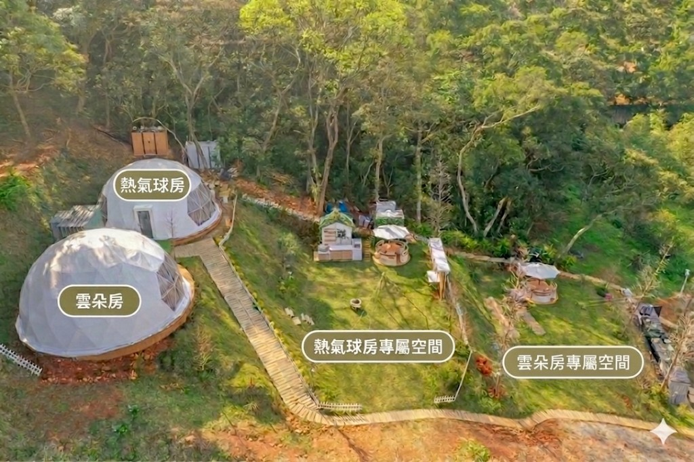
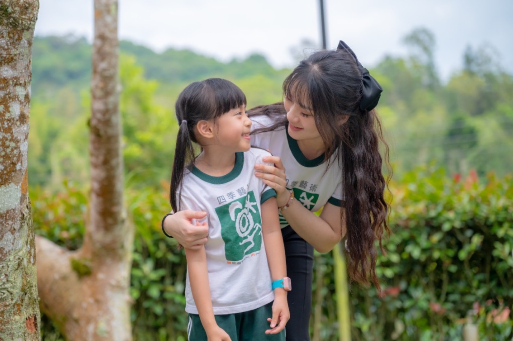
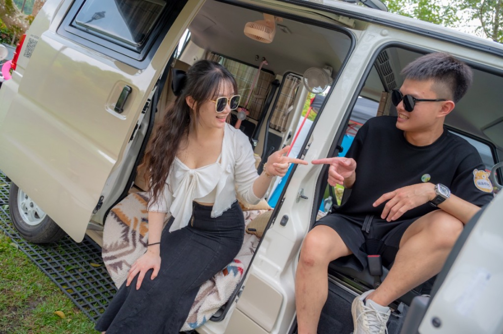
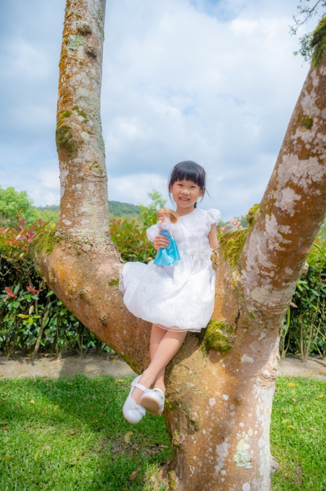

森林畢業寫真短停留｜平日
NT$11,800 NT$8,800
時間：拍攝約 2 小時，總停留約 3 小時
適合：只想完成畢業照、家庭照與戶外場景拍攝的家庭
限定合作企劃｜小巴老師 × 揪好森 Joyforest 露營區
畢業季首波優惠 NT$8,800 起 1–4 位畢業生同價
這不是只有拍幾張畢業照，而是一場屬於孩子、同學與家人的森林畢業小旅行。小巴老師攝影團隊結合揪好森露營區，準備白背景學士服、草地樹林、圓頂帳篷與露營風小帳篷道具場景，讓畢業照拍得自然、有故事，也能拍完留下來聚餐或過夜。
提供學士服拍攝，保留正式畢業照儀式感。
在草地、樹林與自然光中拍出活潑、有故事的畢業照。
每位畢業生都能安排與家人一起拍攝畢業家庭照。
可加選露營區停留、火鍋烤肉聚餐，或直接升級住宿一晚。
一般畢業照常常在學校或攝影棚完成，但對孩子來說，畢業其實不只是拍一張正式照片，而是一段成長的紀念。這次小巴老師攝影團隊與揪好森 Joyforest 露營區合作，把畢業照變成更完整的小旅行體驗。
在這裡可以先拍白背景學士服，留下正式的畢業紀念；接著走到草地、樹林、圓頂帳篷與露營風小帳篷道具場景，拍同學小組照、自然互動照，也能讓每位畢業生和家人一起留下家庭合照。拍攝結束後，不用馬上離開，可以留下來休息、吃飯、聊天，甚至直接住一晚。
這個方案特別適合：
森林系畢業寫真在揪好森 Joyforest（桃園楊梅森林包場豪華露營）進行：圓頂帳篷內可搭設白背景與燈光，戶外有專屬草地、戶外廚房與森林環景，拍完還能依方案停留聚餐或住宿。
前往揪好森露營區官網（camp.8-ways.com） 前往露營區官網查看場地



保留最經典的畢業照形式，適合做紀念、送親友或學校使用。
在草地、樹林、帳篷旁拍攝自然表情，不只站好拍照，而是透過互動引導留下真實笑容。
適合 2–4 位畢業生一起拍同學照、好友照、奔跑互動照與露營風小組照。
每位畢業生都可以安排與家人一起拍攝，讓畢業照不只是孩子的照片，也是全家的紀念。
使用露營風小帳篷、草地、戶外道具，拍出跟一般畢業照不同的森林感。
結合揪好森露營區的圓頂帳篷、草地、戶外廚房與森林背景，讓照片更有旅行感。
森林系畢業寫真不是只有站好拍照，而是把正式畢業照、孩子自然互動、同學小組照與家庭合照放在同一天完成。
這次的新方案，可以參考小巴老師過去拍攝的「家庭旅遊聯誼 × 露營畢業照」案例。當孩子來到草地、帳篷與自然環境裡，表情會比一般攝影棚更放鬆，也更容易拍到奔跑、玩耍、互動與真實笑容。
我們仍然會保留正式的白背景學士服畢業照，讓孩子有一張端正、經典、可以收藏的畢業紀念；接著再到戶外拍攝草地、樹林、帳篷、小組照與家庭照，讓整組照片同時有正式感與旅行感。
過去小巴老師曾拍攝過結合露營、家庭旅遊與畢業照的作品，孩子在戶外環境中更容易放鬆，照片也不只是一張正式紀念，而是包含同學、老師、家人與當天活動氣氛的完整回憶。這次與揪好森露營區合作，就是希望把這樣的拍攝方式變成更完整、可預約的森林系畢業寫真方案。




照片為小巴老師過去露營畢業照與畢業照拍攝作品參考，實際拍攝內容會依當天人數、天氣、孩子狀態、預約方案與場地安排調整。森林系畢業寫真會保留正式白背景學士服，也會安排戶外草地、帳篷、家庭照與自然互動畫面。
以下價格為畢業季首波優惠價。1–4 位畢業生以內同價，1 位也可以拍，4 位一起拍最划算。人數少時，拍攝內容與變化可以安排得更豐富；人數較多時，建議加購拍攝時間。
NT$11,800 NT$8,800
時間：拍攝約 2 小時，總停留約 3 小時
適合：只想完成畢業照、家庭照與戶外場景拍攝的家庭
NT$14,800 NT$11,800
時間：拍攝約 2 小時，總停留約 3 小時
適合：假日安排畢業寫真，不需要聚餐或過夜
NT$15,800 NT$12,800
時間：拍攝約 2 小時，總停留約 5 小時
適合：拍完想留下來吃午餐、晚餐、火鍋、簡單烤肉或休息聊天
NT$19,800 NT$16,800
時間：拍攝約 2 小時，總停留約 5 小時
適合：幾個家庭假日一起拍照，拍完在露營區聚會
NT$19,800 NT$16,800
時間：拍攝約 2 小時＋住宿一晚
適合：想把畢業照升級成森林畢業小旅行
NT$23,800 NT$20,800
時間：拍攝約 2 小時＋住宿一晚
適合：想要安靜渡假感、景觀浴缸與森林住宿的家庭
NT$24,800 NT$21,800
時間：拍攝約 2 小時＋住宿一晚
適合：想要草地、戶外廚房與聚會感更完整的家庭
以上方案皆為 1–4 位畢業生以內同價。費用包含拍攝服務、指定場景使用、基本調色照片雲端交付。餐食、食材、精修照片、畢業紀念冊、影片製作另計。實際可預約日期需依小巴老師攝影排程與揪好森露營區空房狀況確認。
| 項目 | 費用 | 說明 |
|---|---|---|
| 加拍 1 小時 | NT$3,000 | 建議 4 位以上畢業生，或希望增加更多家庭照、同學照、草地互動畫面時加購。 |
| 場地延長停留 1 小時 | NT$1,000 | 適合聚餐休息方案想多留一點時間。 |
| 精修照片 | NT$800／張 | 基本交付為調色照片，若需細部修膚、修雜物、特殊修圖可加購。 |
| 畢業微電影短片 | NT$8,800 起 | 可拍攝一段孩子畢業紀念短片，適合想保留聲音、互動與當天氣氛的家庭。 |
Q：1 位畢業生也可以預約嗎？
可以。此方案 1–4 位畢業生以內同價。1 位拍攝時，可以安排更多個人照、家庭照與場景變化；4 位一起拍則最划算。
Q：會提供學士服嗎？
會提供基本學士服拍攝使用。若需要特定尺寸、顏色或學校指定款式，建議先提前詢問確認。
Q：可以拍家庭照嗎？
可以。此方案的重要特色之一，就是每位畢業生都可以安排家庭合照，讓畢業紀念不只是孩子個人，也包含家人一起陪伴的畫面。
Q：拍完可以烤肉或吃火鍋嗎？
可以選擇聚餐休息方案或過夜方案。場地可使用露營區戶外空間與基本設備，但餐食與食材需自行準備。
Q：有包含畢業紀念冊嗎？
此方案預設不含畢業紀念冊，主要提供調色後照片雲端交付。若需要紀念冊、相本或其他印刷品，可以另外討論報價。
Q：如果超過 4 位畢業生怎麼辦？
建議以加拍時間方式安排。因為畢業生增加時，不只是多拍個人照，也會增加家庭照、小組照、換裝與引導時間。
Q：地點在哪裡？
拍攝地點為揪好森 Joyforest 露營區，位於桃園楊梅森林系場地。正式地址與交通方式會在完成預約後提供。
如果你正在找的不只是制式畢業照，而是希望孩子、同學與家人都能一起留下回憶，森林系畢業寫真會很適合。歡迎先用 LINE 告訴我們畢業生人數、希望拍攝日期、想選擇短停留、聚餐休息或過夜方案，我們會協助確認攝影排程與露營區日期。